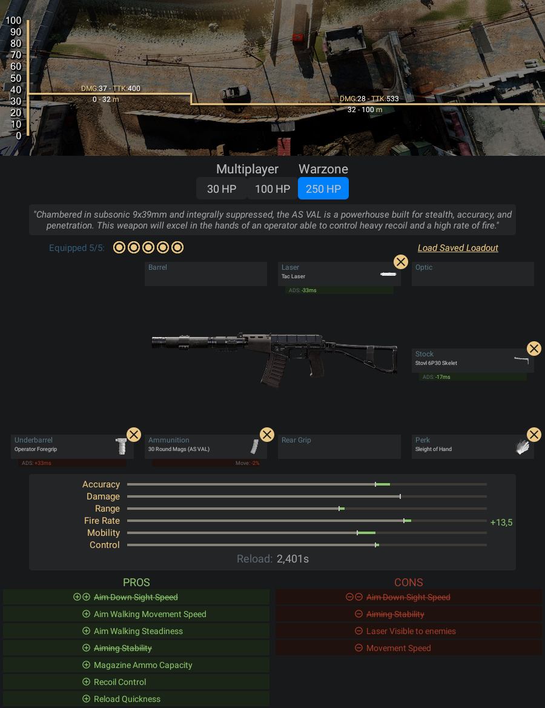

Com uma câmara subsônica de 9x399mm e supressor integral, a AS VAL é uma poderosa
perfeita para furtividade, precisão e penetração. Essa arma se destacará nas mãos
de um operador capaz de controlar o forte recuo e alta cadência de tiro.
- Pontos Positivos:
- -A curta distância não existe arma mais letal que essa (tirando as escopetas), o TTK
- dela é muito alto até os 32 metro superando todas as outras armas da lista
- -Ela tem uma cadência muito alta
- -A velocidade de apontar a mira é altíssima
- Pontos Negativos:
- -O pente aumenta só até 30 balas
- -As balas acabam que você nem vê
- -Recuo dela não tem como controlar nem para média distância, ela só vai servir
- para as curtas ditâncias
Informações e dicas de como fazer uma classe da AS VAL:
Acessórios para AS VAL:
- Laser - Laser Tático
- Coronha - Esquelética Stovl 6P30
- Acoplamento - Empunhadora de Operador
- Munição - Carregador de 30 projéteis
- Vantagem - Mãos Leves